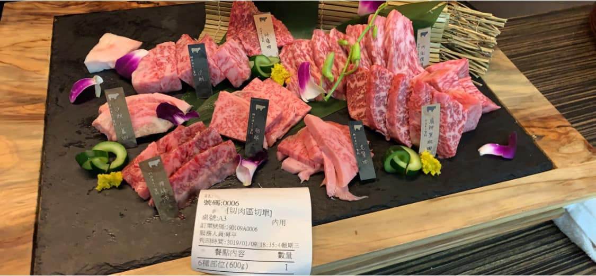

一般日本和牛單單購買生肉1公斤幾乎都要近萬元，在和牛賀只要選擇最優惠的980元套餐， 一個人就能吃到150公克日本A5和牛，加上精選產銷履歷認證的豬肉、地王雞腿肉、鴕鳥翅等特殊食材， 吃起來物超所值。這次虎麗點的1280套餐(每人)可以品嚐到菲力、沙朗、肋眼、老饕肉這些超過6種部位的肉品， 兩人用餐就有400公克份量，完全大滿足～ 另外還有用老母雞熬煮的熱雞湯、新瀉越光米現煮斧鍋飯、甜品等附餐，可以輕鬆吃飽飽。

茶六 東港強和牛燒肉 迷霧和牛燒肉 感想心得